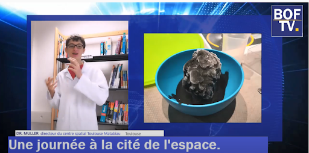
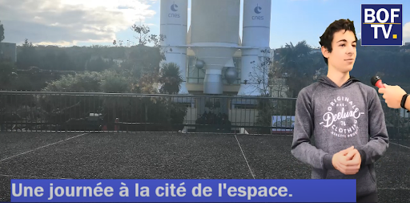
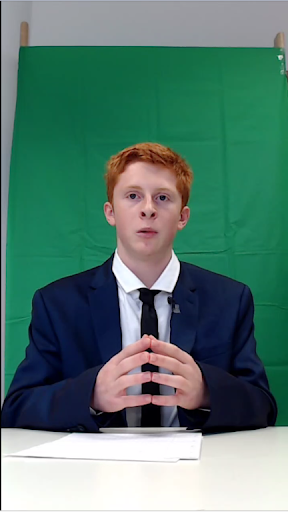

Les extras
A l’occasion d’un projet de travail, un petit groupe d’élèves a parodié une chaîne de télévision connue pour raconter sa sortie à la cité de l’espace. Nous vous proposons de vous faire voyager dans les coulisses de la rédaction.
Au départ, cela ne devait être qu’un simple travail de restitution de ce que l’on a vu à la cité de l’espace, avec les vidéos et les photos que nous avions prises. Mais 5 élèves : Mattéo, Arthur, Alexandre, Quentin et Baptiste, ont décidé de voir les choses autrement. On voulait faire quelque chose de grand, qui se démarque, sérieux tout en ayant un ton humoristique. L’idée de reportage est venue assez vite, après plusieurs propositions nous sommes partis sur la parodie d’une chaîne d’information, et BFM TV était la plus évidente à nos yeux. Il nous fallait un nom, nous avons finalement choisi BOF TV, pour le côté “bof” de la qualité du reportage que nous allions faire (c’étaient nos premiers pas dans le journalisme).
Le temps manquait, nous avions 2 semaines pour écrire le texte, tourner et monter. Le scénario et la disposition des rôles a posé problème, car chacun voyait les choses différemment, mais finalement nous nous sommes mis d’accord sur un plan commun. Il fallait tourner rapidement. C’est donc pour ça que nous avons privatisé une salle au CDI un mercredi matin (rip notre matinée) pour faire les prises nécessaires. Avec plusieurs PC, des caméras et même un fond vert, nous avons bien fait les choses comme des pros, sans le budget qui va avec :( .
Alexandre, alias le Docteur Muller , le scientifique interviewé pour pousser les informations
Quentin, un élève interrogé qui représente notre avis sur la sortie
Et notre cher présentateur aux cheveux de feu, pour chauffer le public dès le début du reportage

Pour la voix off, c’est Baptiste qui s’en est occupé, et Arthur s’est chargé du montage et des animations.
Nous avons montré la vidéo à Mme BAILHE lors d’une séance en E², elle et les autres élèves du demi-groupe ont tout de suite aimé le concept, et nous avons eu le droit à la diffusion de notre vidéo devant toute la classe le lendemain. Ce fût un succès total !
Cependant, l’équipe de journalistes en herbe ne compte pas s’arrêter là. M. Villala nous a proposé de faire un reportage sur le blob. Le présentateur et le scientifique seront toujours là, mais 2 nouvelles personnes seront de la partie: Titouan et Mickaël. Nous avons même pu interviewer le prof d’SVT, que nous remercions pour sa participation
Voici notre première vidéo, j'espère que vous l'aimerez
Cet article a été rédigé par L'équipe BOF TV